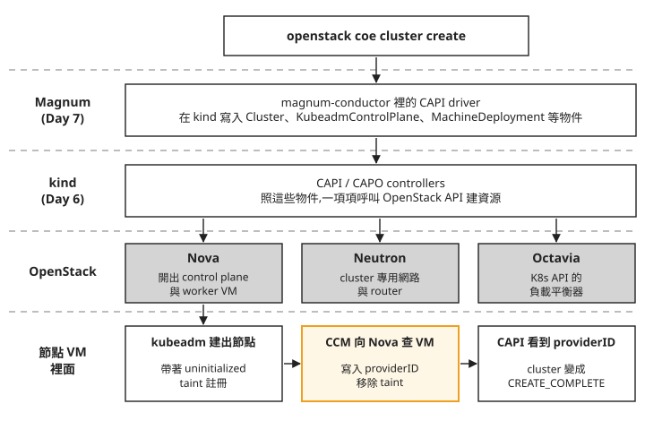
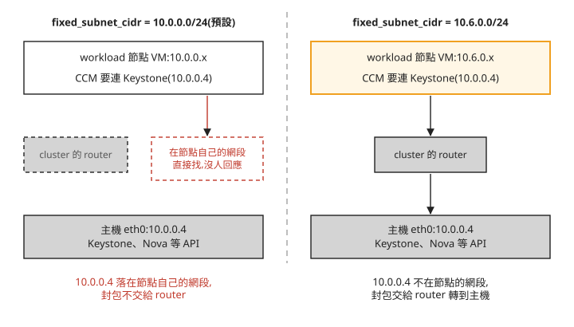
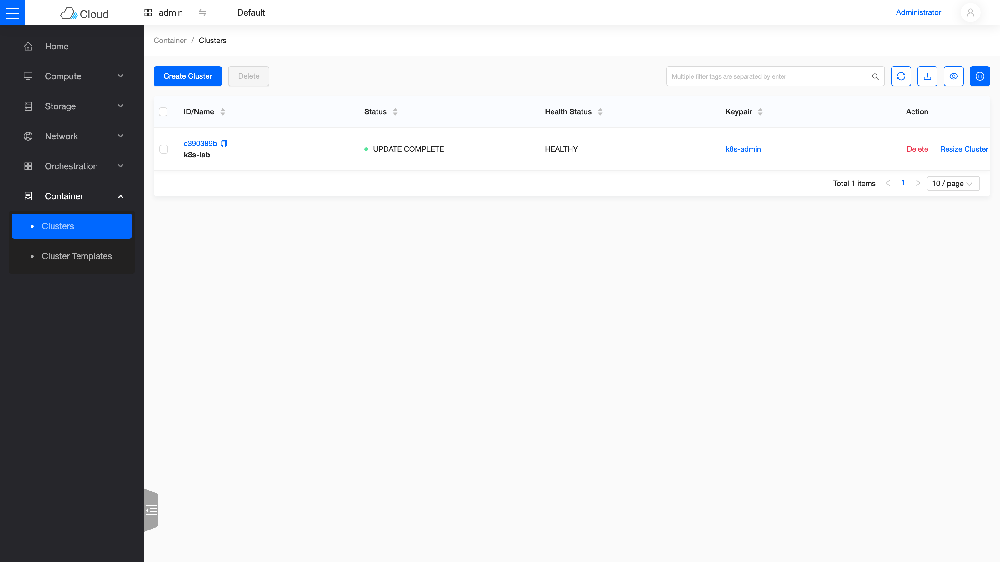
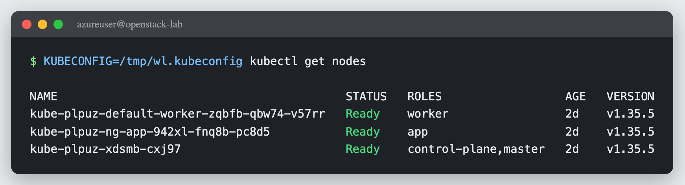

Day 8: 開出第一座 workload cluster——Nova microversion、CCM 與 providerID、LoadBalancer 與 PVC¶
Day 7 結束時,Magnum 已經接上 Day 6 的 kind,也有了一份 ClusterTemplate。這一章真的下單:打一行 openstack coe cluster create,等它開出一座 Kubernetes。下完指令之後,你能直接看到的只有一個狀態欄位。它可能幾秒就變成 CREATE_FAILED,也可能停在 CREATE_IN_PROGRESS,VM 明明都開好了,狀態卻一直不往下走。
這一行指令會依序經過 Magnum、kind 裡的 CAPI、OpenStack 的 Nova、Neutron 和 Octavia,最後還要等新 cluster 裡的元件回頭向 OpenStack 確認自己的身分。cluster 建好之後,我們再在裡面開一個 type=LoadBalancer 的 Service 和一個 PVC,確認它們分別變成 Octavia 的 LB 和 Cinder 的 volume。讀完之後,cluster 建不起來或 LoadBalancer、PVC 卡住時,你能判斷問題停在 Magnum 本身、新節點的初始化,還是 OpenStack 這邊的資源。
一行 cluster create 會經過哪些服務¶
先分清楚兩座 cluster。Day 6 的 kind 是 management cluster,只負責管理別的 cluster,不跑你的應用程式。這一章開出來的叫 workload cluster:節點是 OpenStack 裡真正的 VM,你的應用程式跑在這裡。
把 cluster create 之後發生的事由上往下畫出來,左側標出每一段由誰負責:

照著圖由上往下看:
- Magnum 只負責接單。 它驗過身分、查過配額,就把請求翻譯成 CAPI 的物件寫進 kind(Day 7 接上的那條線)。如果狀態幾秒就變成
CREATE_FAILED,而且 kind 裡一個 CAPI 物件都沒有,問題就出在 Magnum 這一層,還沒輪到 CAPI。 - 真正建資源的是 kind 裡的 CAPI 和 CAPO。 它們呼叫的 Nova、Neutron、Octavia 都是你前幾天部署過的服務,所以這一層出錯時,錯誤訊息通常會出現在那些服務的 log 裡。
- 節點 VM 開好不等於 cluster 建好。 最下面一排是在節點 VM 裡發生的事,要等其中橘色那一步完成,CAPI 才會把節點標成就緒。這一步是什麼、為什麼會卡住,下面會單獨講。
開始之前¶
這一章會用到 Day 4 的 Octavia、Day 6 的 kind、Day 7 的 Magnum,三者都要先確認還在運作,特別是主機(跑 Kolla 的那台 Azure VM)重開機過的話。下文的「主機」都指這台 VM,Nova 替 cluster 開的 VM 則叫「節點 VM」。
kind 裡應該要有 Day 6 裝的四個 provider。kind 在主機重開後不會自己恢復,處理方式見 Day 6 的「VM 重開機後 management cluster 沒有恢復」。如果你重建過 kind,它的 API port 會改變,要照 Day 7 的做法更新 /etc/kolla/config/magnum/kubeconfig,再跑一次 kolla-ansible deploy --tags magnum。
cluster 的節點要用一組 keypair(SSH 金鑰對)建立,這裡先建好。
o-hm0 是 Day 4 在主機上建的網卡,Octavia 透過它跟 amphora VM 溝通。這座 cluster 的 K8s API 前面會有一台 Octavia LB,o-hm0 不通,這台 LB 就建不起來。主機重開機後,負責建立 o-hm0 的 octavia-interface.service 可能比 OVN 先啟動而失敗,o-hm0 就會停在 DOWN。下面程式碼註解提到的「自動重試」設定,本課的章節沒有收錄,所以不要假設它已經生效:最後兩條指令手動重新啟動這個服務(服務已經正常時重跑也無妨),再確認網卡是 UP、有一個 10.1.0.x 的位址(Day 4 的 dhclient 問題也會造成同樣的症狀,見 Day 4 的「octavia-interface.service 起不來,status=203/EXEC」):
# management cluster 4 controllers Ready、magnum 連得到 kind、template 在
kubectl get providers -A
# keypair(cluster create 需要)
openstack keypair create k8s-admin > ~/k8s-admin.pem && chmod 600 ~/k8s-admin.pem
# ⚠️ Octavia o-hm0:host reboot 後 octavia-interface 常因比 OVN 早跑而 failed → o-hm0 DOWN
# K8s API LB 靠它,先修(見 Day6 solutions 的 drop-in 已讓它自動重試)
sudo systemctl reset-failed octavia-interface && sudo systemctl start octavia-interface
ip -br addr show o-hm0 # 應 UP + 10.1.0.x
清掉前幾天留下的 VM 和 LB¶
確認完上面幾項,建 cluster 之前還要騰出 Nova 的磁碟空間。這座 cluster 要開兩台 m1.medium(control plane 和 worker 各一台,每台宣告 40 GB 磁碟),再加上兩台 LB 的 amphora VM。Nova 計算一台主機還剩多少磁碟,用的是每台 VM 的 flavor 宣告的磁碟大小加總,不是實際用了多少;關機(SHUTOFF)的 VM 也照算。Day 2 和 Day 4 的示範 VM、Day 4 用 amphora 建的 lb2 如果還留著,單機 lab 的磁碟額度很快就會用完,amphora 會開不出來。
這些資源是用 demo 帳號建的,先切到 demo 帳號再刪,刪完切回 admin:
source ~/demo-openrc.sh
openstack server delete vm-cirros vm-ubuntu vm-web1 vm-web2
openstack loadbalancer delete --cascade lb2
openstack loadbalancer delete --cascade lb-ovn
source /etc/kolla/admin-openrc.sh
--cascade 會連同 LB 底下的 listener、pool、member 一起刪掉,也會刪掉 lb2 的 amphora VM。lb-ovn 走 OVN provider,沒有 amphora VM,不佔 Nova 磁碟,這裡一併刪掉只是清理。如果你在前幾天用了別的名字,先用 openstack server list 和 openstack loadbalancer list 找出來。
步驟 1:讓 Magnum 用夠新的 Nova API¶
Magnum 的 CAPI driver 會替 cluster 的節點建一個 server group:Nova 的一個分組,讓同一組 VM 照指定的規則擺放。driver 用的規則是 soft-anti-affinity,意思是「盡量把這組 VM 放在不同的主機上,放不開也沒關係」。這對單機 lab 很重要:只有一台主機時,要求「一定分開」的 anti-affinity 會讓第二台 VM 開不出來,「盡量分開」則照樣開在同一台上。
問題在於 Nova 的 API 有版本之分。Nova 每次改 API 的行為,就把版本號往上加一點,這叫 microversion,呼叫的人要在請求裡說明自己要用哪一個版本,Nova 就照那個版本的規則回應。soft-anti-affinity 是 2.15 才加進來的規則,而 Magnum 預設用 2,也就是最早的 2.1。用 2.1 送出這個規則,Nova 會回 400,cluster 幾秒內就 CREATE_FAILED(症狀見疑難排解:cluster 幾秒就 CREATE_FAILED)。
修法是在 Magnum 的設定裡指定 2.15。Kolla 的自訂設定放在 /etc/kolla/config/ 底下(Day 7 的 kubeconfig 也放在這裡),部署時 Kolla 會把這份 magnum.conf 合併進 Magnum 容器的設定檔:
# /etc/kolla/config/magnum.conf (Kolla merge)
[nova_client]
# 預設 2 太舊,driver 建 soft-anti-affinity server group 需 ≥2.15
api_version = 2.15
註解要自己獨立一行。OpenStack 讀 ini 設定檔時,只把 # 或 ; 開頭的整行當成註解,寫在值後面的 # ... 會被當成值的一部分。
版本也不要設得太高。從 2.64 開始,建立 server group 的 API 把規則欄位從清單 policies 改成單一值 policy,而 driver 送的還是清單,設到 2.64 以上會換成另一種失敗。
改完設定,重跑 Magnum 的部署,讓新設定生效:
K8s 節點怎麼對上 OpenStack 的 VM¶
建 cluster 之前,還要先決定 cluster 內部網路用哪個網段。為什麼網段會影響 cluster 能不能建好,要先看流程圖最下面那一排。
節點 VM 開機後,裡面的 kubeadm 把它變成一個 K8s 節點,向 cluster 註冊。這時節點上只記錄了 hostname 和 IP,沒有記錄它對應 OpenStack 裡的哪一台 VM。CAPI 需要這筆對應,才能把每個節點對回自己請 Nova 開的那台 VM 來管理。
替節點補上這個資訊的,是跑在 workload cluster 裡的 OpenStack CCM(cloud controller manager,K8s 跟所在的雲溝通的元件,Magnum 的 driver 會替你裝好)。它向 Nova 查出這個節點是哪一台 VM,把 VM 的 UUID 寫進節點的 providerID 欄位,格式是 openstack:///<VM 的 UUID>。CAPI 檢查到 providerID,就能把節點對回 VM,把它標成就緒。
在 CCM 完成之前,節點身上會帶著一個 taint node.cloudprovider.kubernetes.io/uninitialized:NoSchedule,意思是「這個節點還沒被雲端元件初始化,不要排 pod 進來」。CCM 寫完 providerID 會順手拿掉它。
所以,cluster 建立期間 CCM 如果起不來,後果會一路傳下去:節點沒有 providerID,CAPI 一直等不到就緒的節點;taint 沒拿掉,coredns、Cinder CSI 這些 pod 排不進去,一直 Pending。cluster 已經建好之後 CCM 才出問題,影響比較小:已經就緒的節點和上面的 pod 照常運作,既有的 LB 由 Octavia 自己運作,照樣轉送流量;但新的節點加不進來,新的 LoadBalancer 也建不出來。
CCM 要連得到 Keystone¶
CCM 要向 Nova 查資料,得先在 Keystone 取得身分,用的是 Magnum 的 driver 為這座 cluster 建的 application credential(一組只給這座 cluster 用的 OpenStack 登入資訊)。所以 CCM 必須連得到 OpenStack 的 API 位址,在本課的環境是 10.0.0.4,也就是 Day 1 填進 kolla_internal_vip_address 的主機私有 IP。
CCM 跑在節點 VM 上,節點的位址來自 cluster 專用網路。driver 預設把這個網路設成 10.0.0.0/24,剛好跟主機所在的 Azure 網段相同。下面對照兩種網段設定,看 CCM 送往 10.0.0.4 的封包怎麼走:

我們可以從圖上看到,差別在 10.0.0.4 落不落在節點自己的網段裡:
- 左邊:網段重疊。 節點的網段是
10.0.0.0/24,10.0.0.4落在裡面,節點的路由表據此把它當成同一個區域網路上的位址,直接在 cluster 專用網路裡找,不交給 router。可是那個網路上沒有10.0.0.4,真正的 Keystone 在主機上,CCM 連不上,不斷重啟(CrashLoopBackOff)。 - 右邊:網段錯開。 節點的網段換成
10.6.0.0/24,10.0.0.4不在裡面,封包交給 router,由 router 轉到主機。CCM 連得到 Keystone,節點就能拿到 providerID。
網段要錯開的不只 API 位址。這朵雲上已經用掉的網段還有 Octavia 的管理網路 10.1.0.0/24(o-hm0 那張網卡所在的網路)和對外網路 172.24.4.0/24;workload cluster 內部也有自己的網段,pod 用 10.100 開頭、service 用 10.254 開頭。10.6.0.0/24 跟這些都不重疊。
步驟 2:建 template 與 cluster¶
Day 7 那份 template 沒有指定網段,所以這裡另建一份,帶上三個 label:
kube_tag=v1.34.8:K8s 的版本,要跟 Day 7 上傳的 node image(ubuntu-24.04-v1.34.8)一致。fixed_subnet_cidr=10.6.0.0/24:上一節講的 cluster 專用網路網段。octavia_provider=amphora:之後 CCM 替type=LoadBalancer的 Service 向 Octavia 開 LB 時,指定要哪一種 provider。Day 4 用過 Octavia 的 amphora 和 OVN 兩種 provider,這朵雲 Octavia 的enabled_provider_drivers也只有amphora和ovn兩個名字。driver 預設要的是amphorav2,不在清單上,Octavia 會拒絕(見疑難排解:LoadBalancer 一直 pending),所以明確指定amphora。
--master-lb-enabled 讓 K8s API 前面也放一台 Octavia LB,就是「開始之前」提到需要 o-hm0 的那一台。建 cluster 時指定一台 control plane、一台 worker:
openstack coe cluster template create k8s-v1.34.8-azure \
--image ubuntu-24.04-v1.34.8 --external-network ext-net --dns-nameserver 8.8.8.8 \
--master-lb-enabled --master-flavor m1.medium --flavor m1.medium \
--network-driver calico --docker-storage-driver overlay2 --coe kubernetes \
--label kube_tag=v1.34.8 \
--label fixed_subnet_cidr=10.6.0.0/24 \
--label octavia_provider=amphora
openstack coe cluster create k8s-lab --cluster-template k8s-v1.34.8-azure \
--keypair k8s-admin --master-count 1 --node-count 1
到了 Day 22,amphora 這條路會改變
本章照 amphora 做。到了 Day 22,全量 prechecks 會要求 octavia_provider_drivers 只保留 ovn,之後 Octavia 不再接受 amphora,本章的 octavia_provider=amphora 也就不能再用。如果你讀完 Day 22 還要在 workload cluster 開 LoadBalancer,先看 Day 22 的prechecks 擋下 Octavia 設定,那裡說明了兩條路的取捨。
步驟 3:看著 cluster 建到 CREATE_COMPLETE¶
建立需要一段時間。第一行用 watch 每隔幾秒刷新 cluster 的狀態,看完按 Ctrl-C 離開,再接著跑下面幾行。
另外再盯一個更早出現問題的指標:節點有沒有拿到 providerID。要看 workload cluster 裡的節點,得先有它的 kubeconfig。CAPI 把每座 workload cluster 的 kubeconfig 存成 kind 裡 magnum-system 這個 namespace 的一個 Secret,下面的第二、三行把它取出來存成檔案。最後一行在指令前面加上 KUBECONFIG=...,只有這一條指令改用 workload cluster 的 kubeconfig,你終端機裡的 kubectl 還是指向 kind:
watch openstack coe cluster show k8s-lab -c status
# 盯 providerID 是否被 CCM 設上(關鍵健康指標):
SEC=$(kubectl -n magnum-system get secret -o name | grep kubeconfig | head -1)
kubectl -n magnum-system get $SEC -o jsonpath='{.data.value}' | base64 -d > /tmp/wl.kubeconfig
KUBECONFIG=/tmp/wl.kubeconfig kubectl get nodes -o jsonpath='{..providerID}'
節點註冊之後,最後一行應該印出 openstack:/// 開頭的字串,每個節點一個。如果印出來是空的,而節點 VM 都已經 ACTIVE,就回頭看「K8s 節點怎麼對上 OpenStack 的 VM」那一節:CCM 很可能連不到 Keystone(見疑難排解:VM 都 ACTIVE,cluster 卻一直 CREATE_IN_PROGRESS)。
狀態變成 CREATE_COMPLETE 就可以進下一步。
步驟 4:讓 LoadBalancer 和 PVC 落到 OpenStack¶
cluster 建好之後,剩下要確認的是 workload cluster 裡的資源能不能變成 OpenStack 的資源。這一步開兩樣東西,每一樣背後都是你前幾天部署過的服務在做事:
| 你在 K8s 宣告的 | 實際做事的 OpenStack 服務 | 你在哪天認識它 |
|---|---|---|
節點(kubectl get nodes) |
Nova 開 VM | Day 1–2 |
Service type=LoadBalancer |
Day 4 | |
PVC |
Day 3 |
節點已經在步驟 3 看過了。另外兩樣,中間都要靠一個 workload cluster 裡的元件轉手:

照著圖上兩排看:
- 上排是 LoadBalancer。 CCM 除了替節點寫 providerID,也負責
type=LoadBalancer的 Service:它看到這種 Service,就請 Octavia 開一台 LB,把各節點當成 LB 的成員(流量轉到各節點上 Service 的 NodePort),再把 LB 的 VIP 掛上對外網路ext-net的一個 floating IP。這個 floating IP 就是kubectl get svc看到的EXTERNAL-IP。 - 下排是 PVC。 PVC 是 pod 對儲存空間的請求(「我要 1 GiB」)。真正去建儲存空間的是 Cinder CSI,一個跑在 workload cluster 裡、會呼叫 Cinder API 的儲存外掛。PVC 透過 StorageClass 指定要交給哪個外掛處理。Cinder CSI 收到請求就建一顆 Cinder volume,掛到 pod 所在的節點 VM 上,再掛進容器。
driver 裝 Cinder CSI 時,會替 Cinder 裡每個 __DEFAULT__ 以外的 volume type 建一個名叫 block-<type> 的 StorageClass。這朵雲的 Cinder 只有 __DEFAULT__,所以 workload cluster 裡一個 StorageClass 都沒有,下面的指令先建一個名叫 cinder 的 StorageClass,並設成預設值(annotation is-default-class,之後沒寫 StorageClass 的 PVC 也會交給它)。接著建一個 1 GiB 的 PVC 和一個掛載它的 busybox pod,pod 啟動時把一行字寫進 volume。最後部署兩份 nginx,開一個 type=LoadBalancer 的 Service。
開頭的 export 讓這個終端機接下來的 kubectl 都改連 workload cluster。之後要回頭操作 kind,開一個新的終端機就好:
export KUBECONFIG=/tmp/wl.kubeconfig
# ① nodes Ready
kubectl get nodes
# ③ PVC → Cinder(先建 StorageClass,driver 沒附預設的)
kubectl apply -f - <<'EOF'
apiVersion: storage.k8s.io/v1
kind: StorageClass
metadata: {name: cinder, annotations: {storageclass.kubernetes.io/is-default-class: "true"}}
provisioner: cinder.csi.openstack.org
volumeBindingMode: Immediate
EOF
kubectl apply -f - <<'EOF' # PVC 1Gi + busybox 掛載(最小可用範本)
apiVersion: v1
kind: PersistentVolumeClaim
metadata: {name: day8-pvc}
spec:
accessModes: ["ReadWriteOnce"]
storageClassName: cinder
resources: {requests: {storage: 1Gi}}
---
apiVersion: v1
kind: Pod
metadata: {name: day8-pod}
spec:
containers:
- name: busybox
image: busybox
command: ["sh", "-c", "echo deepwave-day8 > /data/hello && sleep 3600"]
volumeMounts: [{name: vol, mountPath: /data}]
volumes:
- name: vol
persistentVolumeClaim: {claimName: day8-pvc}
EOF
kubectl get pvc # Bound;openstack volume list 出現 pvc-*
kubectl exec day8-pod -- cat /data/hello # 回 deepwave-day8 = volume 掛載+持久化成功
# ② LoadBalancer → Octavia
kubectl create deploy web --image nginx --replicas 2
kubectl expose deploy web --port 80 --type LoadBalancer --name web-lb
kubectl get svc web-lb # EXTERNAL-IP(ext-net FIP)
curl http://<EXTERNAL-IP>/ # host 內可打(Azure FIP 僅 host 內有效)
這段指令依序檢查三件事,每一件該看到的結果如下:
- 節點:
kubectl get nodes列出 control plane 和 worker 兩個節點,STATUS 都是Ready,版本是v1.34.8。workload cluster 裡 CCM、Cinder CSI、calico 的 pod 都是Running,CCM 的重啟次數是 0。 - PVC:
kubectl get pvc的 STATUS 是Bound。這時在 OpenStack 這邊跑openstack volume list,會多一顆名字以pvc-開頭、狀態in-use的 volume,它就是這個 PVC。kubectl exec讀回deepwave-day8,代表 pod 寫進去的資料確實落在這顆 volume 上。 - LoadBalancer:
kubectl get svc web-lb的EXTERNAL-IP從<pending>變成一個172.24.4.x的位址,也就是 ext-net 的 floating IP。LB 要先開一台 amphora VM,會等上幾分鐘。拿到位址時,openstack loadbalancer list裡這台 LB 的狀態是ACTIVE、ONLINE。把位址填進最後一行的<EXTERNAL-IP>。跟 Day 4 一樣,ext-net 只在主機內有效,所以curl要在主機上打。
EXTERNAL-IP 一直停在 <pending>,通常是兩個原因之一:provider 名稱不對(疑難排解:LoadBalancer 一直 pending),或 Nova 磁碟額度不夠開 amphora(疑難排解:amphora 開不出來)。
從儀表板看同一座 cluster¶
下面兩張截圖是同一座 k8s-lab,在課程更後面的階段拍的,所以跟你現在看到的會有一點不同。

Magnum 的 cluster 列表,畫面來自 Day 13 才會裝的網頁介面 Skyline。k8s-lab 的健康狀態是 HEALTHY;狀態欄是 UPDATE COMPLETE,因為 Day 9 對這座 cluster 做了更新。你現在看到的會是 CREATE_COMPLETE,用步驟 3 的 openstack coe cluster show 就能確認。

從 kubectl 看同一座 cluster。畫面上有三個節點全部 Ready,版本是 Day 9 升級後的 v1.35.5,第三個是 Day 9 新增的 app node group;你現在只會有 control plane 和 worker 兩個,版本是 v1.34.8。指令前面的 KUBECONFIG=/tmp/wl.kubeconfig 跟步驟 3 一樣,只影響這一條指令。
疑難排解¶
照官方預設值建 cluster,或漏掉本章某一步時,會遇到下面四個問題,依出現順序排列。
cluster 幾秒就 CREATE_FAILED,kind 裡沒有任何 CAPI 物件¶
症狀:cluster create 之後幾秒就變成 CREATE_FAILED,magnum-system 裡沒有任何 CAPI 物件。magnum-conductor 的 log 有一行 Nova 回的 400:'soft-anti-affinity' is not one of ['anti-affinity','affinity']。
原因:Magnum 用預設的 Nova API 版本 2.1 建 server group,這個版本還不認得 soft-anti-affinity。
修法:照步驟 1 把 [nova_client] api_version 設成 2.15,重跑 kolla-ansible deploy --tags magnum,再刪掉失敗的 cluster 重建:
刪除完成後,照步驟 2 的 cluster create 再建一次。
VM 都 ACTIVE,cluster 卻一直 CREATE_IN_PROGRESS¶
症狀:節點 VM 都是 ACTIVE,CAPI 的 Machine 卻停在 Provisioned(VM 已經開好,但還沒對上任何 K8s 節點),cluster 一直是 CREATE_IN_PROGRESS。步驟 3 的 providerID 查詢是空的;workload cluster 裡的 CCM 是 CrashLoopBackOff,coredns 和 CSI controller 都 Pending。
原因:cluster 專用網路的網段跟 OpenStack API 位址重疊,CCM 連不到 Keystone。原理見「K8s 節點怎麼對上 OpenStack 的 VM」的對照圖。
修法:照步驟 2 在 template 加上 fixed_subnet_cidr=10.6.0.0/24(或任何跟 API 位址、既有網段都不重疊的網段),刪掉卡住的 cluster(openstack coe cluster delete k8s-lab),等它刪除完成再照步驟 2 重建。完整的追查過程見排錯手冊:CAPI 子網撞 API IP。
LoadBalancer 一直 pending,CCM 報 Provider 'amphorav2' is not enabled¶
症狀:type=LoadBalancer 的 Service 一直沒有 EXTERNAL-IP,CCM 的 log 是 Octavia 回的 400 Provider 'amphorav2' is not enabled。
原因:CCM 設定裡的 lb-provider 來自 template 的 octavia_provider label,沒寫時預設是 amphorav2,而這朵雲的 Octavia 只啟用了 amphora 和 ovn。
修法:新的 cluster 照步驟 2 帶上 octavia_provider=amphora。已經建好的 cluster 不用重建:workload cluster 裡有一個叫 cloud-config 的 Secret,是 CCM 讀取的設定檔,裡面寫著 Keystone 位址和 lb-provider 等設定。把其中的 lb-provider 改成 amphora,再重啟 CCM。本課沒有記錄這個 Secret 所在的 namespace 與確切的修改指令,動手前先在 workload cluster 裡找到它。Day 22 之後 amphora 不能再用,見步驟 2 後面的說明。
LB 的 amphora 開不出來,Nova 報 No valid host was found¶
症狀:provider 名稱改對了,LB 還是建不起來;Octavia 建 amphora 時,Nova 回 No valid host was found。查主機的 hypervisor 磁碟帳(<host> 換成 openstack hypervisor list 列出的名稱):
本課遇到這個問題時,local_gb_used 是 121(總共 122),free_disk_gb 只剩 1。
原因:Nova 用 flavor 宣告的磁碟大小計帳,SHUTOFF 的 VM 和舊 LB 的 amphora 也照算。前幾天留下的示範 VM 和 LB 把單機的磁碟額度用完了,見「開始之前」的清理那一段。
修法:照那一段刪掉留下的 VM 和 LB。本課刪完釋放了約 36 GB,額度夠開 amphora 之後,LB 會繼續建立。
想一想¶
- 一位同學的 cluster 建立後五秒就
CREATE_FAILED,他打算到 kind 裡翻 CAPI 的 Machine 物件找原因。你會建議他先看哪裡?為什麼? - 另一朵 OpenStack 的 API 位址是
192.168.10.5,有人把 template 的fixed_subnet_cidr設成192.168.10.0/24。cluster 建立時會在哪一步卡住?你會從哪個指令最早發現? - workload cluster 已經跑了一陣子,某天 CCM 因為設定錯誤一直重啟。線上那兩份 nginx 還能不能連到?這時新開一個
type=LoadBalancer的 Service 會怎樣?
小結¶
openstack coe cluster create 這一行指令,先由 Magnum 翻譯成 CAPI 的物件,再由 kind 裡的 CAPI/CAPO 呼叫 Nova、Neutron、Octavia 開出 VM、網路和 API 的 LB,最後還要等 workload cluster 裡的 CCM 向 Nova 查出每個節點是哪台 VM、寫上 providerID,CAPI 才把 cluster 標成建好。所以追查問題時可以照這個順序往下找:幾秒就失敗、kind 裡沒有 CAPI 物件,問題在 Magnum,例如 Nova 的 microversion 不夠新;VM 都開好了卻一直不完成,先看 providerID 和 CCM,特別是 cluster 網段有沒有跟 API 位址重疊。cluster 建好之後,CCM 和 Cinder CSI 會繼續把 LoadBalancer 和 PVC 轉成 Octavia 的 LB 和 Cinder 的 volume;LB 卡住時,先看 provider 名稱,再看 Nova 還有沒有磁碟額度可以開 amphora。
延伸閱讀¶
想再深入,可以從這幾份開始:
- K8s 官方:Cloud Controller Manager 概念 —— 為什麼 K8s 需要一個「懂雲」的元件?CCM 的職責邊界在這份講得最清楚。
- cloud-provider-openstack 專案 —— 本章用到的 OpenStack CCM 與 Cinder CSI 都在這個 repo;文件目錄裡有各元件的設定參考。
- K8s 官方:Persistent Volumes —— PV、PVC、StorageClass 的正式定義;本章「PVC 變成 Cinder volume」在 K8s 這一側的原理。
- K8s 官方:Service ——
type=LoadBalancer承諾了什麼,以及它怎麼交給雲(這裡是 Octavia)實現。
下一步¶
cluster 開起來之後,還要能升級版本、增加節點、依負載自動擴縮。Day 9 用 k8s-v1.34.8-azure 這份 template 做這三件事,每一件都會多開 VM,開工前一樣先照本章「開始之前」確認 kind、Magnum 和 o-hm0 都正常。
Kubernetes 標誌為 CNCF(Linux Foundation)之商標;OpenStack 吉祥物為 OpenInfra Foundation 官方資產。此處均作社群教學用途。